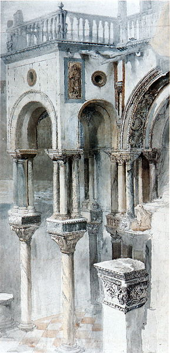
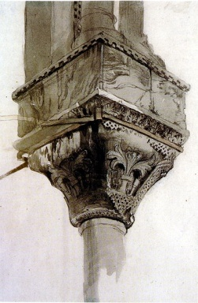
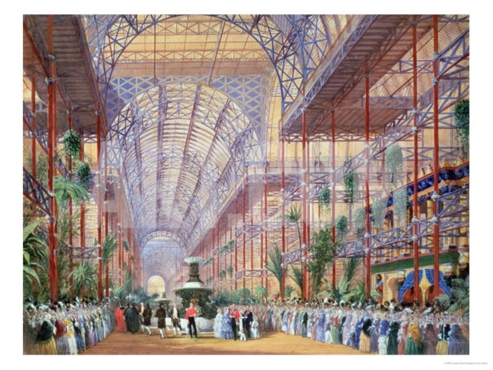
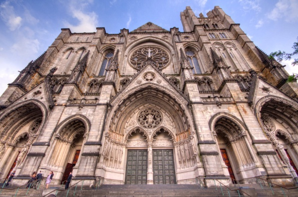
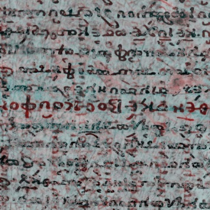
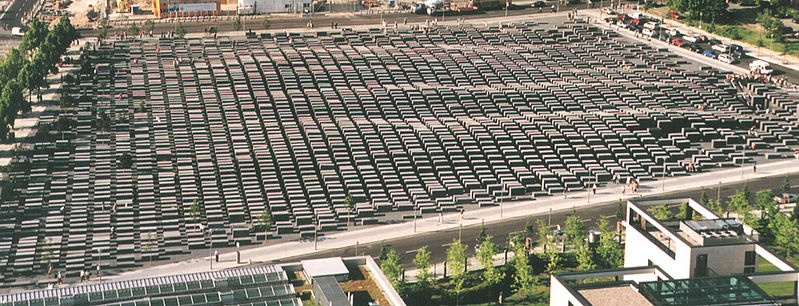
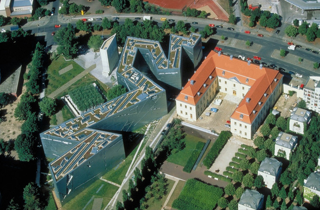

Figure 15: Archimedes Palimpsest—Copyright Ⓒ Rochester Institute
of Technology, Equipoise Imaging and Boeing LTS and licensed for reuse under the
Creative Commons Attribution-ShareAlike
Mark R. Hall
Oral Roberts University
Abstract
The guiding lights of modern architecture mainly focus on form and function. However, historically, architecture has been guided by a deeper sense of calling. John Ruskin, a 19th century critic, used the Gothic style of cathedrals as an example to his contemporaries of the transcendental and moral ideals of architecture, which he categorizes as seven lamps or laws. Just as Gothic architecture served as a palimpsest to Ruskin, Ruskin’s work is beginning to serve as a palimpsest to a new generation of architects whose designs and structures incorporate various aspects of his seven lamps.
Architecture is invariably shaped by both its creator and the landscape from which it emerges. These elements are inextricably intertwined to produce a structure that is aesthetically pleasing, philosophically erudite, and fully functional. Nowhere is this more clearly established than with John Ruskin, a noteworthy Victorian art and social critic. His Seven Lamps of Architecture and The Stones of Venice serve as palimpsests for contemporary architecture. A link to the past is forged based on foundational moral, ethical, philosophical, and religious principles that are reflected in the structures themselves. For Ruskin, when first principles are applied, aesthetic integrity is maintained, truth and beauty are manifested, and the reflection of God is contained in the building itself. The architecture may also point beyond itself to something else, complementing it, expanding it, or transforming it (such as in Gothic architecture). Applying these Ruskinian laws and virtues to today’s architecture provides a framework that grounds the discipline in meaningful theological and philosophical underpinnings from which inspiration and creativity may emerge. Contemporary examples include Daniel Libeskind’s Jewish Museum Berlin that opened in 2001 and Peter Eisenman’s Holocaust Memorial built in Berlin in 2004. Daniel Libeskind is also an architect for the One World Trade Center scheduled to be opened in 2014. The approach taken by these men to design these structures demonstrates their philosophy that architecture should arise out of history and landscape. Therefore, the principles of Ruskin function as a palimpsest for the inspiration, creativity, and designs of architects like Eisenman and Libeskind, as they seek to recapture and maintain the past through structures that promote their own interpretation of memory and beauty, and also reflect truth, power, and life.
In The Seven Lamps of Architecture (1845), John Ruskin defines architecture as “the art which so disposes and adorns the edifices raised by man [. . .] that the sight of them may contribute to his mental health, power, and pleasure”(Ruskin, 1920, p. 8). He asserts that good architecture must exhibit seven lamps that represent spirits or laws: sacrifice, truth, power, beauty, life, memory, and obedience. Ruskin sees these as the framework for architectural creation and design. He believes that good and beautiful architecture must conform to these laws, and the observer should see that “there is room for the marking of his [man’s] relations with the mightiest, as well as the fairest, works of God; and that those works themselves have been permitted, by their [the architects’] Master and his [man’s], to receive an added glory from their association with earnest efforts of human thought”(Ruskin, 1920, p. 73). According to Ruskin, architecture that reflects these seven lamps will draw the builder and the observer toward an experience with the Master Builder, God.
In The Seven Lamps of Architecture, Ruskin explains the meaning of the seven lamps. The illustration below (Figure 1) shows the connections that exist among these seven laws (Baljon, 1997, p. 402).
Ruskin ties beauty to human beings and their experience with nature in The Seven Lamps of Architecture. In one diary entry dated April 19, 1846, Ruskin describes a day in Champagnole, France and then comments on how nature affected him: I felt it more than usual, but it struck me suddenly how utterly different the impression of such a scene would be, if it were in a strange land and in one without history. How dear to the feeling is the pine of Switzerland compared to that of Canada! I have allowed too little weight to these deep sympathies, for I think, if that pine forest had been among the Alleghanys, or if the stream had been Niagara, I should only have looked at them with intense melancholy and desire for home. (Ruskin, 1956, p. 325) This observation of creation enables Ruskin to embrace the theory of associationism, especially its connections to history, which influences his aesthetic appreciation. George Landow (1971) points out that Ruskin’s emphasis on beauty seems to emerge out of these historical associations that assist his criticism of contemporary architecture. Ruskin finds the homes and public buildings of his England constructed without style, without regard to permanence and without meaning for the men who inhabit them. Since he wishes to correct these deficiencies, he places great emphasis upon historical associations, whose presence, he says, will insure both that an edifice will influence the life of the inhabitant and that it will be solidly constructed — this latter because if a building is to endure long enough for historical associations to accrue, then it must be well made. Thus, Ruskin’s establishment of memory as one of his seven laws—with its focus on the social, historical, and cultural milieu—becomes essential to his philosophy of architecture.
In The Stones of Venice, Ruskin’s vivid description of St. Mark’s Cathedral (Figure 2), a most magnificent structure in Venice—“the most precious building in Europe standing yet in the eyes of men and the sunshine of heaven”(Ruskin on St. Mark’s, 1880)—and his detailed sketches of the same (Figures 3, 4, 5, 6, 7, and 8) demonstrate the ability of the author to pen with passion and eloquent style, and the artist to draw with precision and color, the beauty of its architecture:


The appeal of Ruskin’s philosophy of architecture was paramount during the Victorian period. Professor Robert Kerr, a contemporary of the art critic, had previously espoused the same ideas as Ruskin, but he had left them behind after working twenty years in the field. He encouraged experienced architects to deter younger apprentices from the idealistic and romanticized views of Ruskin, for Kerr viewed the architect as “a servant of the public for the efficient design of buildings, precisely like the engineer.” When he presented a lecture entitled “Architectural Criticism” at the Royal Institute of British Architects, he severely criticized Ruskin saying that “Mr. Ruskin’s thoughts soar high enough in the poetry of visionary art, because poetry is his business, but they cannot stoop down to the plain prosaic details of the structuresque, because building is not his business” (Collins, 1998, pp. 259–260). In an October 1849 review of The Seven Lamps of Architecture published in the Journal of Design, Matthew Digby Wyatt admired “the excellent spirit” that was present in “this thoughtful, eloquent book.” However, he quickly points out that Ruskin “either puts his back against [. . .] further development, or would attempt to bring back the world of art to what its course of actions was four centuries ago!” (Mallgrave, 2009, pp. 121, 438).
Ruskin does not hesitate to move from art critic to social critic, demonstrating how the architecture itself can become a commentary on the denigration, deterioration, and degradation of society. Even as he praises the majesty of St. Mark’s in The Stones of Venice, he also notes the ironic contrast that takes place in its shadows as the masses ignore its beauty and the poor grovel in their poverty. And what effect has this splendor on those who pass beneath it? You may walk from sunrise to sunset, to and fro, before the gateway of St. Mark’s, and you will not see an eye lifted to it, nor a countenance brightened by it. Priest and layman, soldier and civilian, rich and poor, pass by it alike regardlessly. Up to the very recesses of the porches, the meanest tradesmen of the city push their counters; nay, the foundations of its pillars are themselves the seats—not “of them that sell doves” for sacrifice, but of the vendors of toys and caricatures. Round the whole square in front of the church there is almost a continuous line of cafés, where the idle Venetians of the middle classes lounge, and read empty journals; in its centre the Austrian bands play during the time of vespers, their martial music jarring with the organ notes,—the march drowning the miserere, and the sullen crowd thickening round them,—a crowd, which, if it had its will, would stiletto every soldier that pipes to it. And in the recesses of the porches, all day long, knots of men of the lowest classes, unemployed and listless, lie basking in the sun like lizards; and unregarded children,—every heavy glance of their young eyes full of desperation and stony depravity, and their throats hoarse with cursing,—gamble, and fight, and snarl, and sleep, hour after hour, clashing their bruised centesimi upon the marble ledges of the church porch. And the images of Christ and His angels look down upon it continually. (Ruskin, 1885, vol. 2, ch. 4, sec. 15) Ruskin observes that society and architecture are invariably connected. John Matteson makes this observation concerning Ruskin the social critic: “The architecture was sublime; the human activity around it was an obscene mockery. What good was the building if it could not transform the debauched children who cast lots on its very steps? After The Stones of Venice, it was no longer enough for Ruskin to criticize art. It was hierarchies of human beings, not structures of wood and stone, that begged most loudly for his attention”(Matteson, 2002, p. 302).
Clearly then Ruskin spoke to the Victorian period, but the question inescapably arises, Can the aesthetic and moral philosophies of a Victorian art and social critic be applicable to design and construction today? Is Ruskin relevant to contemporary architecture?

John Matteson discusses this very question. Citing the building of the Crystal Palace (Figures 9 and 10), whose “prefabricated components heralded a revolution,” which was occurring at the same time as the publication of Ruskin’s Stones of Venice, Matteson asserts that “Ruskin’s ideas were already destined for quaintness in the 1850s” (Matteson, 2002, p. 300). He points out some of the difficulties of applying Ruskin’s first principles to contemporary architecture:

During the Victorian era, Thomas Carlyle (1830), like Ruskin, also demanded that attention be given to history. In his essay “On History” (1830), he says that meaning in the present and the future can be known only as the past is studied. He writes: “For though the whole meaning lies far beyond our ken; yet in that complex Manuscript covered over with formless inextricably-entangled unknown characters,—nay which is a Palimpsest, and had once prophetic writing, still dimly legible there,—some letters, some words, may be deciphered” (author’s emphasis) (Carlyle, 1971, p. 56). Uhlig concurs with Carlyle and maintains that in the intertext, which he likens to the palimpsest (Figures 13, 14, and 15), “historically conditioned tensions come to the fore: tensions not only between calendar time and intraliterary time but also between the author’s intention and the relative autonomy of a text, or between the old and the new in general” (Uhlig, 1985, p. 502). The presence of the past coexists with the text; thus, “any text will the more inevitably take on the characteristics of a palimpsest the more openly it allows the voices of the dead to speak, thus—in a literary transcription of our cultural heritage—bringing about a consciousness of the presentness of the past” (Uhlig, 1985, p. 502). Deciphering the present moment of the text as it relates to many past moments reveals the intertextual meaning the text seeks to convey and the critic to uncover.

The word “palimpsest” derives from παλίμψηστoς (palimpsestos) which is Greek in origin and means “scraped again” (Liddell & Scott, 1990) and can be defined as “a papyrus or other kind of writing material on which two or more sets of writing had been superimposed in such a way that, because of imperfect erasure, some of the earlier text could be read through over-writing”(Darville, 2002, p. 309). When used in the field of archaeology, “the term is often applied to landscapes in which traces of earlier arrangements can be seen amongst and below the modern pattern”(Darville, 2002, p. 309), and in architecture palimpsest means the shadow of a past structure that is in some way incorporated as part of an old one that has been remodeled or a new one that has been built. Michael Earle describes the concept as follows:
Finished in 2004 and inaugurated on May 10, 2005—sixty years after the conclusion of World War II—The Memorial to the Murdered Jews of Europe (Figures 16 and 17), also known as the Holocaust Memorial, was built in Berlin by Peter Eisenman, an American architect (Brunberg, 2009). Encompassing five and a half acres (Ouroussoff, 2005), it is designed with “2,711 pillars, planted close together in undulating waves, represent[ing] the 6 million murdered Jews” (Quigley, 2005). The memorial is open every day year round and can be entered on each of the four sides (Quigley, 2005).
True to his architectural theory, Eisenman is focused on incorporating the memorial into its site and to the city itself (Quigley, 2005), “acknowledge[ing] the dynamic reality of the living city” (Eisenman, 2004, p. 207). Nicolai Ouroussoff explains:


Opened in 2001, The Jewish Museum Berlin (Figure 18) showcases 1700 years of the history of the Jews in Germany. Two buildings house the exhibits, the old Kollegienhaus, once used as a courthouse, and a new one designed by Daniel Libeskind. The museum covers 166,840 square feet (Libeskind, 2011) and is constructed as a twisted zig-zag to remind museum-goers of a warped Star of David (Mueller-Kroll, 2011). It is entered through an underground tunnel. A “Void”—a space with nothing in it except 10,000 iron faces that are called “Fallen Leaves,” created by an artist from Israel, Menashe Kadishman—is part of the memorial (Installations, 2012). One visitor describes his experience in this manner: On the floor, thousands of pieces of heavy metal cut into shapes of the faces of screaming holocaust victims. The visitor is encouraged to walk across the void. Clank, clank, clank echoing up into and all around the void. The noise rings in your head but there is no escape because as you are tempted to look down the screaming faces stare into your psyche. Very simple, very effective. Haunting. (Gold, 2004) The memorial has three intersecting tunnels that are said to represent three pathways of German life for the Jew: the Axis of Continuity (with German history), the Axis of Emigration (from Germany), and the Axis of the Holocaust. Then the participant moves into the Garden of Exile with its 49 pillars that reminds visitors of the people expelled from Germany, which according to Libeskind, is designed “to completely disorient the visitor. It represents a shipwreck of history.” Even so, Russian willow oak trees that represent hope have been planted on top of the stelae (Libeskind Building, 2012). Libeskind’s design entitled “Between the Lines” was chosen from a world-wide competition of 165 entries (Levenson, 2005), and, of course, the architect was ecstatic when he won: “It was a thrilling moment when I was selected. The jury recognized that my plan was neither dogmatic nor glib; that it served as an individualized mirror, which each visitor could read in a different way. They valued its authenticity and celebrated its originality. I felt honored and elated” (Libeskind, 2004, p. 85). Because of his own personal background and experience, Daniel Libeskind knew that the architecture must first connect the place to its history and then take visitors from the past to the present and propel them to the future, experiencing a sense of alienation: You struggle to find the most immediate way to get at the truth. What was needed, as I saw it, was a building that, using the language of architecture, speaking from its stones, could take us all, Jews and non-Jews alike, to the crossroads of history, and show us that when the Jews were exiled from Berlin, at that moment, Berlin was exiled from its past, its present, and—until this tragic relationship is resolved— its future. (Libeskind, 2004, p. 83) At this museum, Daniel Libeskind believes history and architecture are joined, for this place “thematizes and integrates, for the first time in post-war Germany, the history of the Jews in Germany, the repercussions of the Holocaust and spiritual displacement. It is also just a museum with exhibits on the wall” (Mueller-Kroll, 2011).
Winning the design competition in 2003 out of 13,683 entrants with his Memory Foundations plan (titled this, per Libeskind, “because it’s about memory and at the center of it is a foundation for 21st century New York” [Nessen, 2011])—originally known as the Gardens of the World (Hirschkorn, 2003; Swanson, 2011; NY1 News, 2003), Daniel Libeskind was chosen as the architect to create the Ground Zero Master Plan for the reconstruction of the World Trade Center (Figure 19) (Libeskind, 2011). As he put together the design, he realized, “We have to be able to enter this hallowed, sacred ground while creating a quiet, meditative and spiritual space”(Studio Libeskind, 2012). He was very sensitive to the site and to New Yorkers, desiring for his plan to fully memorialize what had happened there: When I first began this project, New Yorkers were divided as to whether to keep the site of the World Trade Center empty or to fill the site completely and build upon it. I meditated many days on this seemingly impossible dichotomy. To acknowledge the terrible deaths which occurred on this site, while looking to the future with hope, seemed like two moments which could not be joined. I sought to find a solution which would bring these seemingly contradictory viewpoints into an unexpected unity. So, I went to look at the site, to stand within it, to see people walking around it, to feel its power and to listen to its voices. (Studio Libeskind, 2012) For Libeskind, this project was personal: “What happened on 9/11 was not something abstract, it happened to me” (qtd. in Earle). In fact, on the day Libenskind opened his Jewish Museum in Berlin, the Twin Towers in New York were attacked and then collapsed. As soon as he received word around 2:30 p.m., he left for the States. He still remembers that day, “I turned to all my colleagues [. . .] and I do not know where it came from, but I said, ‘I’m returning to Lower Manhattan’” (Needham, 2011). Because of disagreements among all those involved, the project was eventually removed from Libenskind (Needham, 2011). Even though many architectural changes were made, the WTC Masterplan (Figure 19) as delineated by Libeskind was still basically followed: The WTC Masterplan serves as both the conceptual basis and the technical foundation for the entire complex re-development of ground zero. The Masterplan defines the spirit of the approach to re-building and creates a meaningful conceptual framework for the site. It also defines the spatial organization of all elements of the development within the site with an emphasis on the human experience and the public realm. The Masterplan dictates the location and massing of each program element, building height and relative size, as well as proximity and relationship to one another. The WTC Masterplan also supplies the framework for the site’s infrastructure, transportation, sustainability standards and security strategy and lays out the functional relationship between all the site elements with respect to the surrounding context of the immediate neighbourhoods and the surrounding city. (Libeskind, 2011) Michael Arad, the final designer, credits Libeskind as the one who “‘established the broad parameters’ of what is now the new World Trade Center and ‘acted as a guidestar. If you’re going to build something, you need to start some place.’” Libeskind acknowledges his part in the process: “I’m so happy to be able to design a piece of this city.” He observes, “If you’re a conductor or a composer, Stravinsky or Copland, and the New York Philharmonic is performing your piece and you’re conducting it, do you regret that you’re not playing the first violin? That you’re not playing the tuba? Of course not” (Needham, 2011). Therefore, he asserts confidently, “In the end, the public will see the symbolism of the site. [. . .] Of course, compromises had to be made, but a master plan is not about a few lines drawn on paper. It’s about an idea, and how to express that idea through the turmoil of politics and the creativity of all the other architects. In the end, the result will be pretty close to my original rendering” (Davidson, 2007). Libenskind’s original plan reflects his intense interest in symbolism. He wanted the foundations of the former buildings to be part of the memorial site (“We need to journey down, some 70 feet into Ground Zero, onto the bedrock foundation, a procession with deliberation into the deep indelible footprints of Tower One and Tower Two”), and he emphasized their connection to the nation itself. The great slurry walls are the most dramatic elements which survived the attack, an engineering wonder constructed on bedrock foundations and designed to hold back the Hudson River. The foundations withstood the unimaginable trauma of the destruction and stand as eloquent as the Constitution itself asserting the durability of Democracy and the value of individual life. (Studio Libeskind, 2012) Libeskind imagined “the sky” as “home again” to “vertical gardens” on “a towering spire of 1776 feet high” (symbolic of the founding of the country, the year when the Declaration of Independence was signed)—the “Gardens of the World,” filled with plants from all parts of the earth (Studio Libeskind, 2012; NY1 News, 2003; Nessen, 2011). He explains, “Why gardens? Because gardens are a constant affirmation of life. A skyscraper rises above its predecessors, reasserting the pre-eminence of freedom and beauty, restoring the spiritual peak to the city, creating an icon that speaks of our vitality in the face of danger and our optimism in the aftermath of tragedy” (Studio Libeskind, 2012). Reminiscent of the Statue of Liberty, the tower would be off-center in its northwest corner, designed to pay homage to the Statue of Liberty’s torch which Libeskind remembers seeing when he was 13 years old in 1959 when he came to the United States from Poland (Swanson, 2011). Indeed Libeskind’s ideas emerge out of his experience as an immigrant. He explains in his proposal for the reconstruction of Ground Zero: “I arrived by ship to New York as a teenager, an immigrant, and like millions of others before me, my first sight was the Statue of Liberty and the amazing skyline of Manhattan. I have never forgotten that sight or what it stands for. This is what this project is all about” (Studio Libeskind, 2012). The Wedge of Light piazza and the Park of Heroes open spaces were significant places in Daniel Libeskind’s plan (Lower Manhattan Development Corporation, 2003). Libeskind explains how his design remembers the ones who died: “Those who were lost have become heroes. To commemorate those lost lives, I created two large public places, the Park of Heroes and the Wedge of Light. Each year on September 11th between the hours of 8:46 a.m., when the first airplane hit and 10:28 a.m., when the second tower collapsed, the sun will shine without shadow, in perpetual tribute to altruism and courage” (Studio Libeskind, 2012). Once again, the symbolism is paramount.
Baljon, C. J. (1997). Interpreting Ruskin: The argument of The Seven Lamps of Architecture and The Stones of Venice. The Journal of Aesthetics and Art Criticism, 55(5), 401–414.
Brunberg, J. (2009). Memorial to the murdered Jews of Europe. The Polynational War Memorial, August 31. Available from http://archive.is/gEP6B
Carlyle, T. (1971). On history. In Thomas carlyle: Selected writings (pp. 51–58). New York: Penguin Books.
Collins, P. (1998). Changing ideals in modern architecture, 1750–1950. Montreal: McGill-Queen P, 2nd edition.
Council on Tall Buildings and Urban Habitat (2012). One World Trade Center. Available from http://www.skyscrapercenter.com/new-york-city/one-world-trade-center/
Curl, J. S. (2006). Ruskin, John. In A dictionary of architecture and landscape architecture. New York: Oxford University Press.
Darville, T. (2002). Palimpsest. In The concise Oxford dictionary of archaeology (p. 309). New York: Oxford University Press.
Davidson, J. (2007). The liberation of Daniel Libeskind. New York Magazine, September 30, 56–64. Available from http://nymag.com/arts/architecture/features/38356/
Earle, M. (2012). Daniel Libeskind: The architecture of palimpsest. Think Design Magazine. Available from http://thinkdesignmagazine.com/index.php/architecture/daniel-libeskind
Eisenman, P. (1988). Architecture as a second language: The texts of between. Threshold, the Journal of the School of Architecture, 4, 72.
Eisenman, P. (2004). Architecture and the problem of the rhetorical figure. In Eisenman inside out: Selected writings, 1963–1988 (pp. 202–207). New Haven: Yale University Press.
Gold, M. (2004). German jewry’s tragic history: Melvin Gold visits Berlin’s Jewish museum. Chigshul Magazine, September 4. Available from http://www.jmberlin.de/main/DE/06-Presse/02-Pressespiegel/artikel/2004/2004_09_04_cm.php
Hirschkorn, P. (2003). 9/11 memorial design contest called biggest ever. CNN U.S., May 30. Available from http://edition.cnn.com/2003/US/Northeast/05/30/wtc.memorial/
Installations (2012). The installations. The Jewish Museum Berlin (jmberlin.de). Available from http://www.jmberlin.de/main/EN/01-Exhibitions/04-installations.php
Landow, G. P. (1971). Ruskin’s refutation of “false opinions held concerning beauty”. In The aesthetic and critical theories of John Ruskin Princeton: Princeton University Press. Available from http://www.victorianweb.org/authors/ruskin/atheories/2.1.html
Levenson, G. (2005). The captivating Jewish museum. The Jewish Week. Available from http://www.highbeam.com/doc/1P1-108595819.html
Libeskind, D. (2004). Breaking ground: Adventures in life and architecture. East Rutherford, NJ: Penguin Putnam.
Libeskind, D. (2011). Ground zero master plan: New York, NY. Studio Daniel Libeskind (daniel-libeskind.com). Available from http://daniel-libeskind.com/projects/ground-zero-master-plan
Libeskind Building (2012). The Libeskind Building. The Jewish Museum Berlin. Available from http://www.jmberlin.de/main/EN/04-About-The-Museum/01-Architecture/01-libeskind-Building.php
Liddell, H. G. & Scott, R. (1990). A Greek-English lexicon. New York: Clarendon Press, 9th edition.
Lower Manhattan Development Corporation (2003). Lower Manhattan transportation strategies. Available from http://www.renewnyc.com/plan_des_dev/transportation/
Mallgrave, H. F. (2009). Modern architectural theory: A historical survey, 1673–1968. New York: Cambridge University Press.
Matteson, J. (2002). Constructing ethics and the ethics of the construction: John Ruskin and the humanity of the builder. Crosscurrents, Fall 2002, 294–303. Available from http://www.questia.com/library/1G1-94983815/constructing-ethics-and-the-ethics-of-construction
Mueller-Kroll, M. (2011). Jewish Museum Berlin celebrates 10th anniversary. Available from http://www.npr.org/2011/10/19/141521740/jewish-museum-berlin-celebrates-10th-anniversary
Needham, P. (2011). Daniel Libeskind: The return of ground zero’s master planner. Huffington Post. Available from http://www.huffingtonpost.com/2011/09/09/daniel-libeskind-ground-zero_n_954949.html
Nessen, S. (2011). Q&A: Interview with World Trade Center site architect Daniel Libeskind. Available from http://www.wnyc.org/articles/wnyc-news/2011/sep/07/interview-master-architect-world-trade-center-site-daniel-libeskind/
NY1 News (2003). Libeskind plan chosen for WTC site. Available from http://www.ny1.com/content/news/28221/libeskind-plan-chosen-for-wtc-site-
Ouroussoff, N. (2005). A forest of pillars, recalling the unimaginable. The New York Times, May 9. Available from http://www.nytimes.com/2005/05/09/arts/design/09holo.html?pagewanted=all\&_r=0
Quigley, S. (2005). Holocaust Memorial: Architect Peter Eisenman, Berlin 2005. The Polynational War Memorial. Available from http://www.war-memorial.net/Holocaust-Memorial--Architect-Peter-Eisenman,-Berlin-2005-2.66
Ruskin, J. (1866). The crown of wild olive. New York: Colonial Press. Available from http://www.gutenberg.org/ebooks/26716
Ruskin, J. (1885). The stones of Venice, volumes 1–2. New York: John B. Alden.
Ruskin, J. (1920). The seven lamps of architecture. London: Waverley Book Company. Available from http://openlibrary.org/books/OL13514059M/The_seven_lamps_of_architecture.
Ruskin, J. (1956). The diaries of John Ruskin: 1835–1847, volume 1. Oxford: Clarendon Press.
Ruskin on St. Mark’s (1880). Ruskin on St. Mark’s: His work in connection with the famous Basilica. The New York Times. Available from http://query.nytimes.com/mem/archive-free/pdf?res=F10F17FB35551B7A93CBA91789D85F448884F9
Studio Libeskind (2012). New World Trade Center site designs: Firm D: Introduction. Available from http://www.renewnyc.com/plan_des_dev/wtc_site/new_design_plans/firm_d/default.asp
Swanson, C. (2011). Libeskind, Daniel: The lessons of the master planner. New York Magazine, August 27. Available from http://www.nymag.com/news/9-11/10th-anniversary/daniel-libeskind/
Uhlig, C. (1985). Literature as textual palingenesis: On some principles of literary history. New Literary History, 16, 481–513.